Sandby
Roter und grauer Granit mit schwarzem Korn
Höhe insgesamt: 110 cm
Größte Breite: 65 cm
Größte Dicke: 38 cm
Runenhöhe: 10,5 - 23,5 cm
Runeninschrift :
Eskil setzte diesen Stein für seinen Bruder Tue ...

Sandby
Listennummer : DR 228 / DK Sj 92
| Navidaten: 55.37895 11.73898 oder: Kirkevej 13, 4171 Glumsø |
Auf dem Kirchhof von Sandby, hinter der Kirche, steht ein noch gut erhaltenes Fragment eines Runensteines (Sandby 2). Die Inschrift wird auf den Zeitraum 970 - 1020 datiert.
Das Bruchstück stand um 1640 in der Sandby Kirche, als Eckgrundstein in der südöstlichen Ecke des Kirchenschiffs, mit dem niedersten Teil nach oben, so dass nur 3 - 4 Runen über der Erdoberfläche sichtbar waren. Es wurde jedoch nicht herausgenommen. Dies geschah erst im Juli 1931 auf Anweisung des Nationalmuseums. Hierbei entdeckte man auch auf der schrägen Seite, rechts oben, die Runen. Danach wurde der Stein im Kirchhof, rechts vom Waffenhaus, aufgestellt.
Von dem Altertumsforscher und Begründer der Runologie Ole Worm (1588-1654) war 1622 die Initiative für einen königlichen Brief an alle dänischen und norwegischen Bischöfe ausgegangen, die darin aufgefordert wurden die bekannten Altertümer in ihrem Bereich an das Reichsarchiv nach Kopenhagen zu melden. Durch den damaligen Herrscher über Dänemark und Norwegen, König Christian IV. (König von 1588 bis 1648) wurde dieses Ansinnen in die Tat umgesetzt. Über die eingehenden Rückmeldungen wurde er auf diesen Runenstein aufmerksam. Von Ole Worm wurde er höchstpersönlich untersucht und ein Holzstich angefertigt. Der ist in seinem großen Werk "Danicorum Monumentorum libre sex", 1643, abgebildet (S. 129 - dort als "Sandbyense III" betitelt):
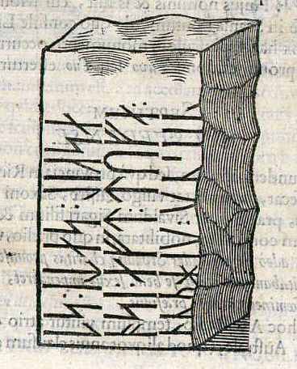
Im Jahre 1652 sollte der Runenstein eigentlich auf königliches Geheiß nach Kopenhagen geschickt werden, aber diese Aufforderung ignorierte man einfach.
Über die digitale Sammlung des Nationalmuseums Kopenhagen kann man diese s-w Fotos von 1931 abrufen, die der dänische Runologe Erik Moltke aufgenommen hat. Auf dessen Geheiß wurde der Stein in dem Jahr von seinem bisherigen Platz entnommen und im Kirchhof aufgestellt.
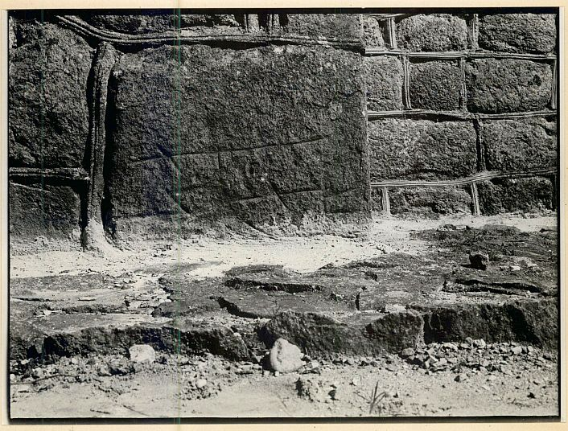
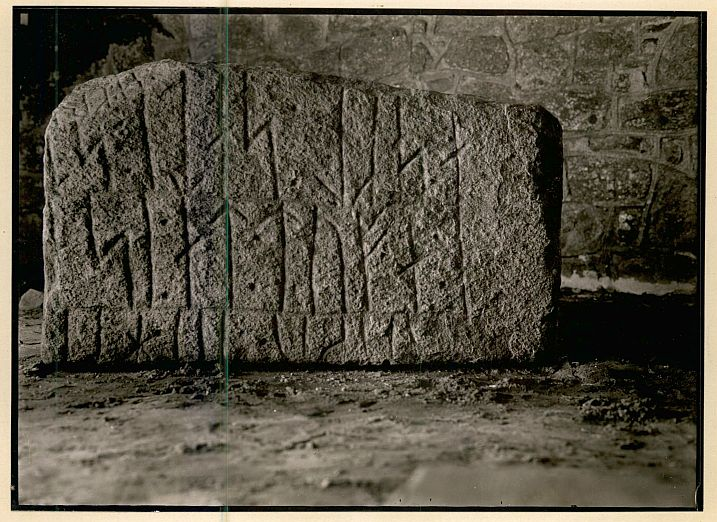
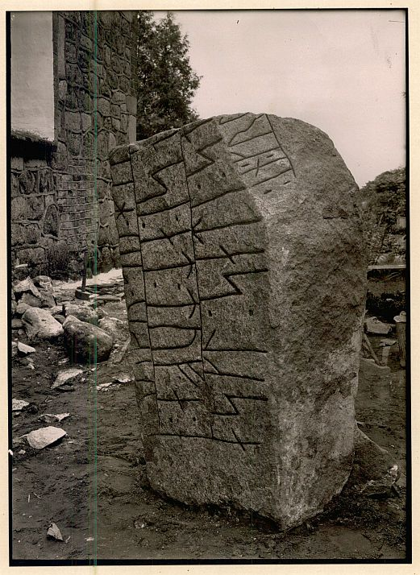
Im Vorfeld zu dem 2016 erschienenen Buch von Lisbeth M. Imer "Danmarks Runesten - en fortælling" reiste die Runologin des Nationalmuseums Kopenhagen mit dem Fotografen Roberto Fortuna zur Bestandsaufnahme durch die Lande. Dieser hat die Runensteine abends bei Dunkelheit mit Schräglicht aufgenommen und darüber wirklich herausragende Fotos erzielt - Aufnahmedatum war der 14.03.2012.
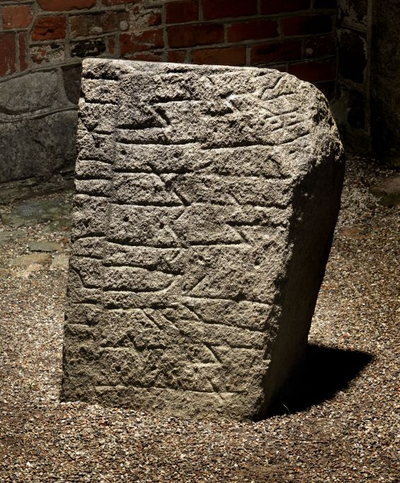
Lizenz: CC-BY-SA 3.0
Bei meinem letzten Besuch an der Kirche von Sandby am 31.08.2016 auf dem Heimweg von meiner Wikinger-Tour konnte ich diese Fotos fertigen:
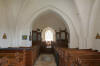 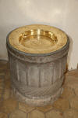 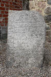


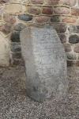 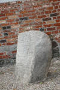 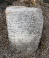 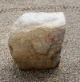


Die Zeichnung dieses Runensteins von Magnus Petersen in Ludv. F. A. Wimmers monumentalem Werk "De danske Runemindesmærker" von 1899-1901, Band II, S. 446, habe ich aus der in meinem Besitz befindlichen Ausgabe abfotografiert:

Im Internet finden sich über die Homepage der dänischen Runendatenbank hier alle Infos zu diesem Runensteinen.
Der entsprechende Eintrag zu dem Runenstein in "Fund og Fortidsminder" ist hier verlinkt.